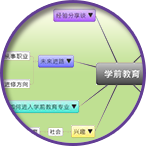

生涯信息系统
学系、职业的选择是多数人进行生涯规划时常须面对的课题，然而在生涯规划过程中，只有认识自我是不够的，还需要更了解外在环境，扩大自己对职业世界的认识，才可能同时选择适合自己，又能帮助个人实践生涯目标的就学或就业机会，而非依据学系或职业的热门程度、父母长辈的期待、考试分数相近与否来选择，避免「选错科系」、「入错行」之遗憾。
学校可能因为时间、场地因素限制，举办的生涯活动无法帮助学生了解最多的教育、职业选项类别，也难以深度探索自己较有兴趣的专业。生涯信息系统不受时间、空间限制的特性可以弥补上述不足。本网站藉由系统的架构，每个专业包含的信息尽可能广泛，同时提供「外部环境信息」及「与自我特质相关的信息」，再以文字、图片、照片等多媒体方式详尽介绍。藉由《生涯信息系统》的建置，在使用者进行生涯规划的过程中，提供以下帮助：
学校可能因为时间、场地因素限制，举办的生涯活动无法帮助学生了解最多的教育、职业选项类别，也难以深度探索自己较有兴趣的专业。生涯信息系统不受时间、空间限制的特性可以弥补上述不足。本网站藉由系统的架构，每个专业包含的信息尽可能广泛，同时提供「外部环境信息」及「与自我特质相关的信息」，再以文字、图片、照片等多媒体方式详尽介绍。藉由《生涯信息系统》的建置，在使用者进行生涯规划的过程中，提供以下帮助：
1. 增进对各学系及其工作世界之认识
2. 配合兴趣、性向等测评进行生涯抉择
3. 扩展各种教育及职业途径的考虑范围

运用思维导图快速了解专业
本系统不仅提供各专业丰富的内容介绍，亦搭配思维导图简要呈现各专业大致特色，透过思维导图直接连结到需进一步查找的详细信息，快速找到可响应特定问题的信息。
更方便搭配生涯测评结果
藉由兴趣、性向等测评，使用者可以探索自己的优势能力、喜欢从事的活动。本系统整理各专业所需的能力、适合就读的兴趣类型等，帮助使用者思考自己适合进入什么样的专业。
结合多媒体方式介绍
实际参访学校或工作场所，是帮助我们真正了解各专业的有效方式，然而各校受限于时间、资源，较难落实实际参访行程。本系统特别拍摄各专业课程、实训的照片，帮助学生一窥各专业的实际场景，并以轻松活泼的方式深入了解各专业。